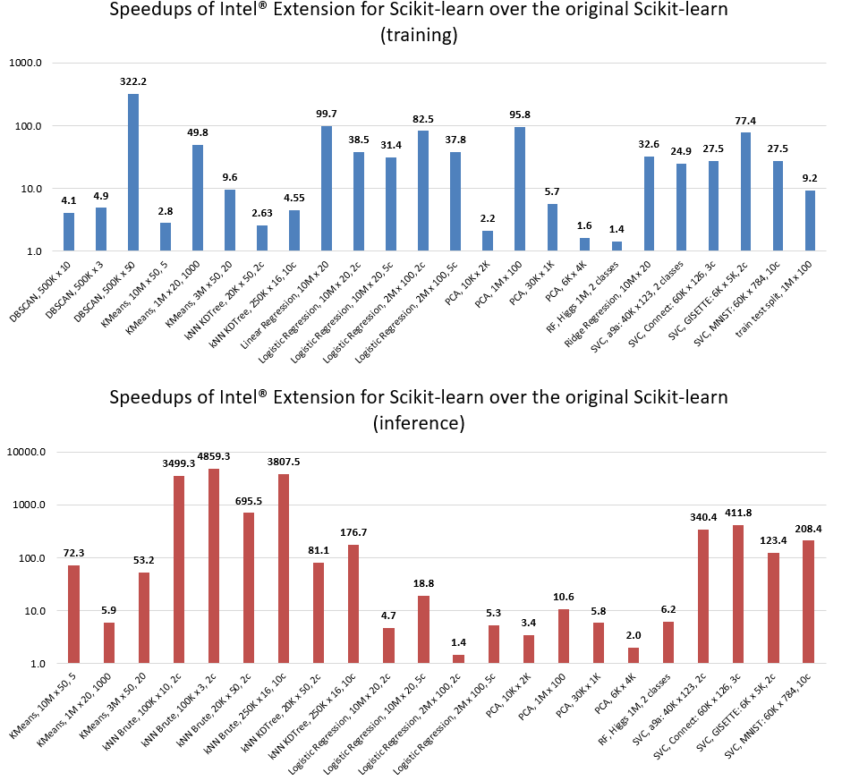

Intel(R) Extension for Scikit-learn*¶
Intel(R) Extension for Scikit-learn is a seamless way to speed up your Scikit-learn application. The acceleration is achieved through the use of the Intel(R) oneAPI Data Analytics Library (oneDAL). Patching scikit-learn makes it a well-suited machine learning framework for dealing with real-life problems.
{kind=link}
Configurations:
HW: c5.24xlarge AWS EC2 Instance using an Intel Xeon Platinum 8275CL with 2 sockets and 24 cores per socket
SW: scikit-learn version 0.24.2, scikit-learn-intelex version 2021.2.3, Python 3.8
Designed for Data Scientists and Framework Designers¶
Intel(R) Extension for Scikit-learn* was created to give data scientists the easiest way to get a better performance while using the familiar scikit-learn package.
Intel(R) Extension for Scikit-learn* depends on Intel(R) daal4py. You can learn more in daal4py documentation.
Usage¶
Intel(R) Extension for Scikit-learn* dynamically patches scikit-learn estimators to use Intel(R) oneAPI Data Analytics Library as the underlying solver, while getting the same solution faster.
It is possible to enable those patches without editing the code of a scikit-learn application by using the following commandline flag:
python -m sklearnex my_application.py
Or from your script:
from sklearnex import patch_sklearn patch_sklearn()
For example:
import numpy as np
from sklearnex import patch_sklearn
patch_sklearn()
# You need to re-import scikit-learn algorithms after the patch
from sklearn.cluster import KMeans
X = np.array([[1, 2], [1, 4], [1, 0],
[10, 2], [10, 4], [10, 0]])
kmeans = KMeans(n_clusters=2, random_state=0).fit(X)
print(f"kmeans.labels_ = {kmeans.labels_}")
In the example above, you can see that the use of the original Scikit-learn has not changed. This behavior is achieved through drop-in patching.
To undo the patch, run:
sklearnex.unpatch_sklearn()
# You need to re-import scikit-learn algorithms after the unpatch:
from sklearn.cluster import KMeans
You may specify which algorithms to patch:
Patching only one algorithm:
from sklearnex import patch_sklearn # The names match scikit-learn estimators patch_sklearn("SVC")
Patching several algorithms:
from sklearnex import patch_sklearn # The names match scikit-learn estimators patch_sklearn(["SVC", "DBSCAN"])
Intel(R) Extension for Scikit-learn does not patch all scikit-learn algorithms and parameters. You can find the full patching map here.
Note
Intel(R) Extension for Scikit-learn supports optimizations for the last four versions of scikit-learn. The latest release of scikit-learn-intelex-2021.3.X supports scikit-learn 0.22.X, 0.23.X, 0.24.X and 1.0.X.
Follow us on Medium¶
We publish blogs on Medium, so follow us to learn tips and tricks for more efficient data analysis the help of Intel(R) Extension for Scikit-learn. Here are our latest blogs:
Important links¶
Support¶
Report issues, ask questions, and provide suggestions using:
You may reach out to project maintainers privately at onedal.maintainers@intel.com